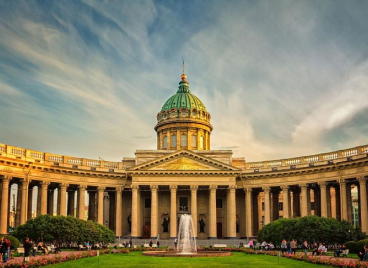
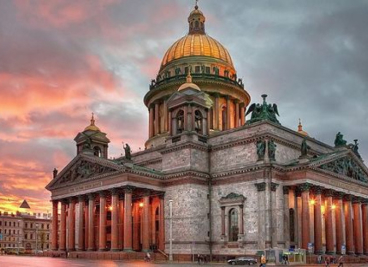

History of Saint-Petersburg
Founded by Tsar Peter the Great in 1703 as Russia’s “Window on Europe”, St. Petersburg is Russia’s second largest city and bears the unofficial status of the country’s cultural capital and the most European city. The city is a hub of cultural, historical and architectural landmarks, famous for its harmonious mix of western European and Russian architecture and its many waterways, which are inseparable from St. Petersburg’s panorama. Many of the city’s most famed architectural sites stretch along the Neva’s historic embankments. Moreover, the bridges and natural canals of the river have earned St. Petersburg the nickname “Venice of the North”. Architecturally it ranks as one of the most splendid and congenial cities of Europe. Its historic district was designated a UNESCO World Heritage site in 1990.
Since its founding St. Petersburg has played a vital role in Russian history. For two centuries (1712-1918) it was the capital of the Russian Empire. In 1914 Russia entered the First World War on the side of the West Allies. The German-sounding name of St. Petersburg was changed to the more Slavonic Petrograd. In 1924 after the October Revolution and moving the capital back to Moscow, Petrograd was renamed Leningrad.
The city is also remembered for its fierce defense while besieged during the World War II. The city lived under the siege for nine hundred days from September 08 1941 to the January 27 1944. Over a million people lost their lives during the siege. After being slightly neglected by the Communist Party, revival of the city began in 1991 when voters elected to restore the original name oа St. Petersburg.
Today St. Petersburg is Russia's second-largest city after Moscow, more than five million inhabitants in 2016, and an important Russian port on the Baltic Sea. It is politically incorporated as a federal subject (a federal city)
Saint
Petersburg is a major trade gateway, financial and industrial center of Russia specialising in oil and gas trade, shipbuilding yards, aerospace industry, radio and electronics, software and computers; machine building, heavy machinery
and transport, including tanks and other military equipment, mining, instrument manufacture, ferrous and nonferrous metallurgy (production of aluminium alloys), chemicals, pharmaceuticals, medical equipment, publishing and printing, food
and catering, wholesale and retail, textile and apparel industries, and many other businesses.